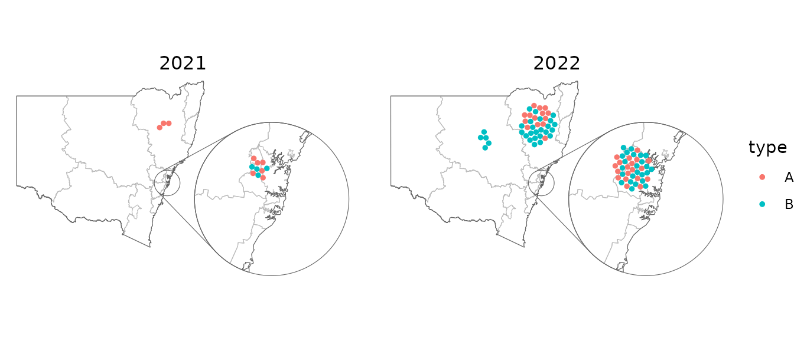
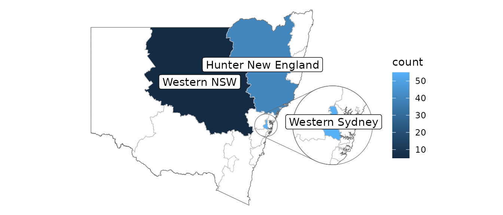

This article provides some recipes for plots that might be of interest. These examples use map data from the nswgeo package.
Many of the examples use the same example dataset modelled after the
structure of a linelist: rows are distinct events, and they can have a
type of A or B. Each event is
associated with a location described at different granularities by the
postcode, lga, and lhd
columns.
head(covid_cases_nsw)
#> # A tibble: 6 × 5
#> postcode lga lhd year type
#> <chr> <chr> <chr> <int> <chr>
#> 1 2427 Mid-Coast Hunter New England 2022 B
#> 2 2761 Blacktown Western Sydney 2021 A
#> 3 2426 Mid-Coast Hunter New England 2022 B
#> 4 2148 Blacktown Western Sydney 2022 B
#> 5 2768 Blacktown Western Sydney 2021 A
#> 6 2766 Blacktown Western Sydney 2021 BYou need to specify which column has the feature by setting the
location aesthetic. This example has three different
columns of locations for different feature types; your dataset only
needs to have one of these.
In general you’ll start with geom_boundaries() to draw
the base map. This geom needs to be told which feature_type
you’re after (e.g. "nswgeo.lga" for LGAs). All of the
summary geoms of ggautomap can then be used to draw your
data.
Scatter
covid_cases_nsw %>%
ggplot(aes(location = lga)) +
geom_boundaries(feature_type = "nswgeo.lga") +
geom_geoscatter(aes(colour = type), sample_type = "random", size = 0.5) +
coord_automap(feature_type = "nswgeo.lga", xlim = c(147, 153), ylim = c(-33.7, -29)) +
guides(colour = guide_legend(override.aes = list(size = 1))) +
theme_void()Points are drawn at random within the boundaries of their location.
Insets
To show a zoomed in part of the map as an inset, you can configure an inset and provide it to each relevant geom. The geoms in this package are all inset-aware. See ggmapinset for details.
covid_cases_nsw %>%
ggplot(aes(location = lga)) +
geom_boundaries(feature_type = "nswgeo.lga") +
geom_geoscatter(aes(colour = type), size = 0.5) +
geom_inset_frame() +
coord_automap(feature_type = "nswgeo.lga", inset = configure_inset(
centre = "Blacktown", radius = 40, units = "km",
scale = 7, translation = c(400, -100)
)) +
theme_void()
#> Warning: The `radius` argument of `configure_inset()` is deprecated as of ggmapinset
#> 0.4.0.
#> ℹ Use `shape = shape_circle(centre, radius)` instead.
#> ℹ The deprecated feature was likely used in the ggautomap package.
#> Please report the issue at <https://github.com/cidm-ph/ggautomap/issues>.
#> This warning is displayed once every 8 hours.
#> Call `lifecycle::last_lifecycle_warnings()` to see where this warning was
#> generated.Packed points
This next example uses geom_centroids() to place the
points in a packed circle in the centre of each feature. It also shows
how you can fine-tune the plot with the usual ggplot2
functions.
covid_cases_nsw %>%
dplyr::filter(year >= 2021) %>%
ggplot(aes(location = lhd)) +
geom_boundaries(feature_type = "nswgeo.lhd") +
geom_centroids(aes(colour = type), position = position_circle_repel_sf(scale = 35), size = 1) +
geom_inset_frame() +
coord_automap(feature_type = "nswgeo.lhd", inset = configure_inset(
centre = "Sydney", radius = 80, units = "km", feature_type = "nswgeo.lhd",
scale = 6, translation = c(650, -100)
)) +
facet_wrap(vars(year)) +
labs(x = NULL, y = NULL) +
theme_void() +
theme(strip.text = element_text(size = 12))
Choropleths
If your data has multiple rows for each location (such as our example
dataset where the rows are disease cases) then you can use
geom_choropleth() to aggregate these into counts.
covid_cases_nsw %>%
ggplot(aes(location = lhd)) +
geom_choropleth() +
geom_boundaries(
feature_type = "nswgeo.lhd", colour = "black", linewidth = 0.1,
outline.aes = list(colour = NA)
) +
geom_inset_frame() +
coord_automap(feature_type = "nswgeo.lhd", inset = configure_inset(
centre = "Western Sydney", radius = 60, units = "km",
scale = 5, translation = c(400, -100)
)) +
scale_fill_steps(low = "#e6f9ff", high = "#00394d", n.breaks = 5, na.value = "white") +
theme_void()On the other hand, if your dataset has only one row per location and
there is an existing column that you’d like to map to the
fill aesthetic, then instead use
geom_sf_inset(..., stat = "automap"):
summarised_data <- data.frame(
lhd = c("Western Sydney", "Sydney", "Far West", "Mid North Coast", "South Western Sydney"),
cases = c(250, 80, 20, NA, 100)
)
summarised_data %>%
ggplot(aes(location = lhd)) +
geom_sf_inset(aes(fill = cases), stat = "automap", colour = NA) +
geom_boundaries(
feature_type = "nswgeo.lhd", colour = "black", linewidth = 0.1,
outline.aes = list(colour = NA)
) +
geom_inset_frame() +
coord_automap(feature_type = "nswgeo.lhd", inset = configure_inset(
centre = "Western Sydney", radius = 60, units = "km",
scale = 3.5, translation = c(350, 0)
)) +
scale_fill_gradient(low = "#e6f9ff", high = "#00394d", na.value = "grey90") +
theme_void()
Positioning text
These examples give some different ways of placing text, accounting for possible insets.
covid_cases_nsw %>%
ggplot(aes(location = lhd)) +
geom_choropleth() +
geom_boundaries(feature_type = "nswgeo.lhd") +
geom_inset_frame() +
geom_sf_label_inset(aes(label = lhd),
stat = "automap_coords",
data = ~ dplyr::slice_head(.x, by = lhd)
) +
coord_automap(feature_type = "nswgeo.lhd", inset = configure_inset(
centre = "Western Sydney", radius = 60, units = "km",
scale = 3.5, translation = c(350, 0)
)) +
labs(x = NULL, y = NULL) +
theme_void()
The repulsive labels from ggrepel can be used; they
just require a bit of massaging since they don’t natively understand the
spatial data. Note that you may also wish to use
point.padding = NA to disable the default repulsion caused
by the labelled points, which is good for labelling scatter plots but
often doesn’t make sense in mapping contexts.
library(ggrepel)
# label all features that have data
covid_cases_nsw %>%
ggplot(aes(location = lhd)) +
geom_choropleth() +
geom_boundaries(feature_type = "nswgeo.lhd") +
geom_inset_frame() +
geom_label_repel(
aes(
x = after_stat(x_inset),
y = after_stat(y_inset),
label = lhd
),
stat = "automap_coords",
nudge_x = 3,
nudge_y = 1,
point.padding = NA,
data = ~ dplyr::slice_head(.x, by = lhd)
) +
scale_fill_distiller(direction = 1) +
coord_automap(feature_type = "nswgeo.lhd", inset = configure_inset(
centre = "Western Sydney", radius = 60, units = "km",
scale = 3.5, translation = c(350, 0)
)) +
labs(x = NULL, y = NULL) +
theme_void()
# label all features in the map regardless of data, hiding visually overlapping labels
covid_cases_nsw %>%
ggplot(aes(location = lhd)) +
geom_choropleth() +
geom_boundaries(feature_type = "nswgeo.lhd") +
geom_inset_frame() +
geom_label_repel(
aes(
x = after_stat(x_inset),
y = after_stat(y_inset),
geometry = geometry,
label = lhd_name
),
stat = "sf_coordinates_inset",
data = cartographer::map_sf("nswgeo.lhd"),
point.padding = NA,
inherit.aes = FALSE
) +
scale_fill_distiller(direction = 1, palette = 2) +
coord_automap(feature_type = "nswgeo.lhd", inset = configure_inset(
centre = "Western Sydney", radius = 60, units = "km",
scale = 4, translation = c(500, 0)
)) +
labs(x = NULL, y = NULL) +
theme_void()Loading custom maps and shape files
ggautomap accesses map data via the cartographer package’s registry.
See vignette("registering_maps", package = "cartographer")
for a guide on how to register new map data. This can be as simple as a
one-liner calling cartographer::register_map() to assign
map data to a name that ggautomap can use.
Before proceeding to load custom shape files, check the R package rnaturalearth which contains maps for world maps and countries.
Map data needs to be in any format understood by
sf::read_sf(), such as a shape file (.shp).
For example Australian maps can be retrieved from ABS
Digital boundary files.
First read in the shape file using the sf package:
sf <- sf::read_sf("map_data.shp")Shape files can be subset in a similar fashion to data.frames using
dplyr:
# subset to only include Victorian postcodes only
sf_vic <-
sf::read_sf(map_files) |>
mutate(postcode = as.integer(POA_CODE21)) |>
filter(POA_CODE21 >= 3000 & POA_CODE21 <= 3999)After reading in the shape file, register with
cartographer package:
cartographer::register_map(
"sf.vic", # the map name
data = sf_vic, # this is the object we subsetted above
feature_column = "postcode", # data column to include
)Check the map has been registered:
cartographer::feature_types()
[1] "maps.italy" "rnaturalearth.countries_hires" "sf.vic" "maps.lakes"
[5] "rnaturalearth.countries" "rnaturalearth.australia" "maps.nz" "maps.world"
[9] "maps.state" "sf.nc" "maps.france"To use the registered shapefile:
ggplot() +
geom_boundaries(feature_type = "sf.vic") +
theme_void()